Forage — graphical skins: Surf and Nebula, each with a lighter and a darker side
What this shows. The ask (owner, 2026-08-30): "a couple not-just-color themes for like say surfing, ocean and beach vibes, thinking sunset and beach colors with some ocean … another that is like a space theme … themeing along graphical lines along with color." Until now a skin could move colours, fonts and radii and nothing else — no token carried a picture. This branch adds four art slots to the token sheet (--page-art, --band-art, --card-art, --accent-glow), each painted over its solid token by app.css, and two families that use them. Everything you see is gradients and inline SVG — no image files yet — so it works today and is fully measured; your photos and badges drop into /skins/art/<family>/ in the same slots.
Read this before comparing. The skin is the subject, so each frame is deliberately in a different skin. Text never sits on a picture: cards are opaque, every colour stop in a band or page gradient is graded against the ink on it (band at 4.5 — decision 7 from the warm set), and a translucent "glass" card like the space reference is the one thing deliberately not done, because text on glass over a nebula cannot be graded. The board fixture's pictures point at a test CDN and never load; the empty stages are the fixture.
Decisions — 1–6 locked on review, 2026-08-30: "yep I like all of it, let's pr and merge"
| # | Decision | Proposed | Alternatives / what your assets would change |
|---|---|---|---|
| 1 | The art slots as the mechanism | Four tokens, painted as background layers over the solid; none is byte-identical to today; gradients graded, url() same-repo or inline only | A per-skin component stylesheet (rejected: a skin that ships component CSS can hide a moderation notice — docs/SKINS.md) |
| 2 | Where the picture goes | The masthead band is the banner slot (your surf panorama, a nebula strip); the page ground takes only a low-contrast texture (sand grain, starfield); cards take at most a faint grain | A full-bleed photo behind the whole page (rejected: headings like "Discover" sit on the page ground, not on a card) |
| 3 | Surf’s palette | Sand ground with a sky gradient at the top, sunset band (plum → coral → ember) with a foam line, ocean-teal links, coral hover; night swell = deep ocean, dusk band, sunset links | More ocean (teal ground) and less sand; the surfer/wave badges as a wordmark glyph next to “Forage” |
| 4 | Nebula’s palette | Deep field = near-black with a starfield and violet/teal veils, indigo→teal band, neon-cyan links with glow, cyan-rimmed cards; observatory = moon-dust gray keeping the dark band | Planet-scape band from your fourth reference; a warmer nebula (magenta) instead of teal |
| 5 | The glow | Wordmark and active nav only | Also on links (louder; risks legibility on the 14px nav) |
| 6 | Assets you supply | Band: 1600×120 and 800×120 WebP, subject weighted right, ≤150 KB, veiled by the skin to ≥4.5 under the wordmark. Page texture: 512×512 seamless tile within the ground’s luminance band. Only assets you own or GPL-compatible ship in the repo | — |
Current — Forage (light), main (forage@7a701c3)
Forage (light) default
bg#F8F4ECcard#FFFFFFlink#38683Ftext#2B251Cmuted#68604F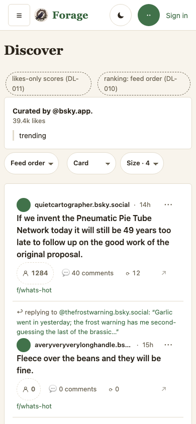
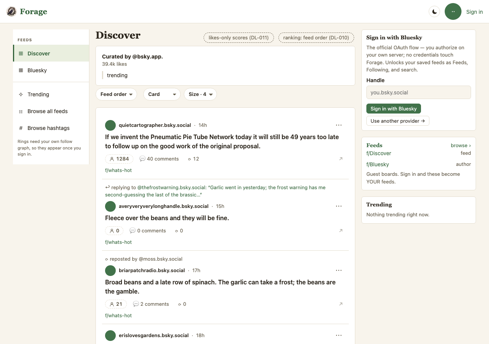
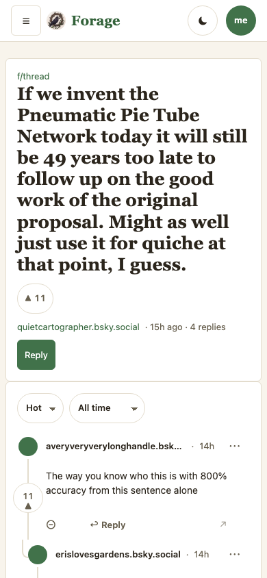
Proposed (forage@3bf6bff)
Surf — sand, sunset band with a foam line, ocean links
Surf (beach day) surf
bg#F7ECDAcard#FFFFFFband-fill#C24E3Anav-fill#DDEEF1link#0F6E8Clink-hover#B9452Ftext#23343Fmuted#5C6B75art slots: page-art gradient · band-art gradient + inline SVG · card-art none · accent-glow none
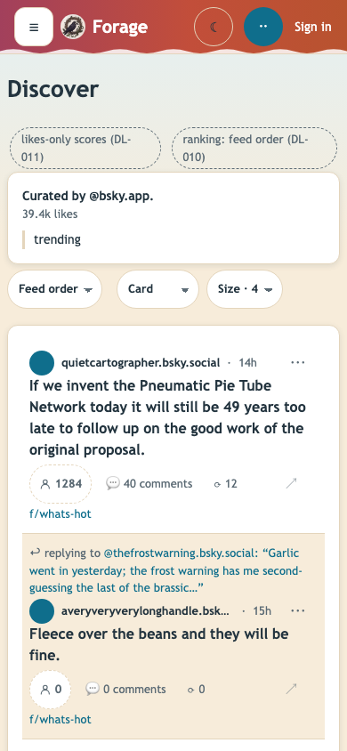
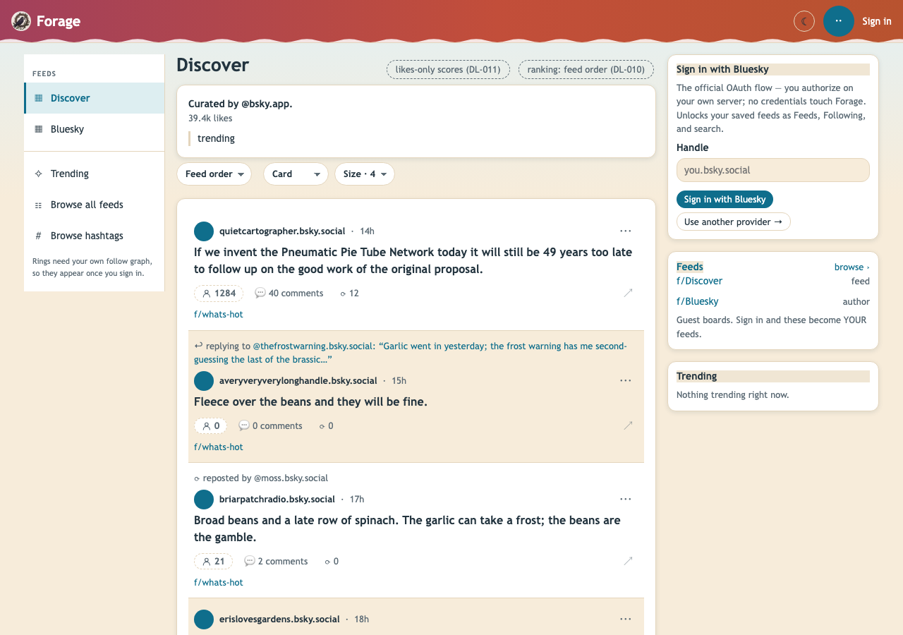
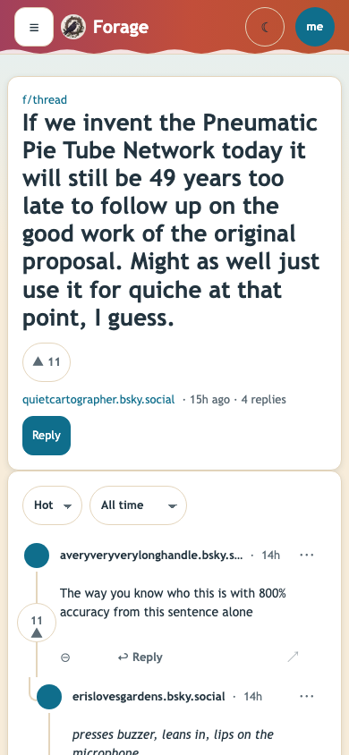
Surf (night swell) surf-dark
bg#0E2233card#163445band-fill#3B2A55nav-fill#12293Clink#F4B77Alink-hover#FFD4A3text#EAF3F7muted#A9BFCBart slots: page-art gradient · band-art gradient + inline SVG · card-art none · accent-glow none
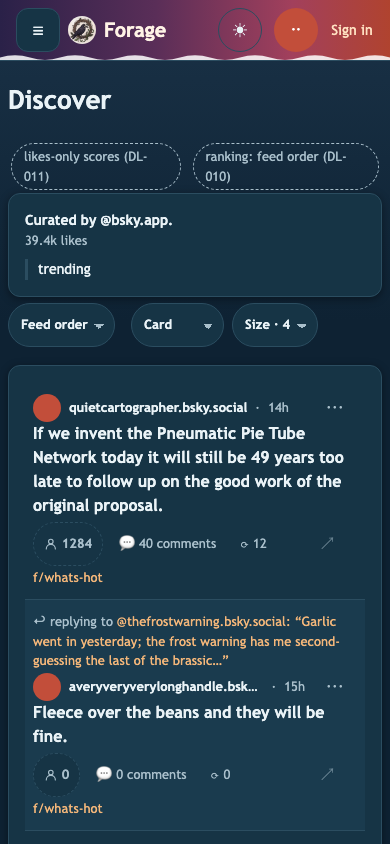
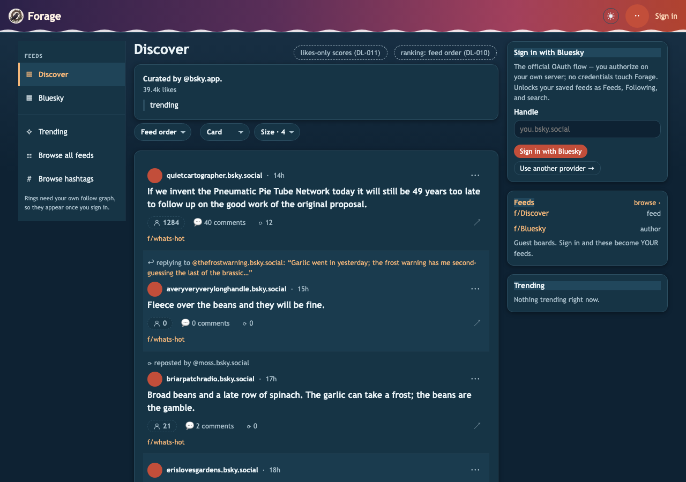
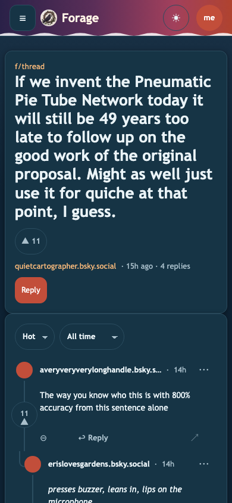
Nebula — starfield and nebula veils, indigo→teal band, neon glow
Nebula (deep field) nebula-dark
bg#0B0D1Acard#151833band-fill#1B1540nav-fill#10132Alink#7FE3F0link-hover#B9F2FAtext#E9E8F5muted#A7A9C8art slots: page-art gradient + inline SVG · band-art gradient · card-art none · accent-glow 0 0 8px rgba(127, 227, 240, .55)
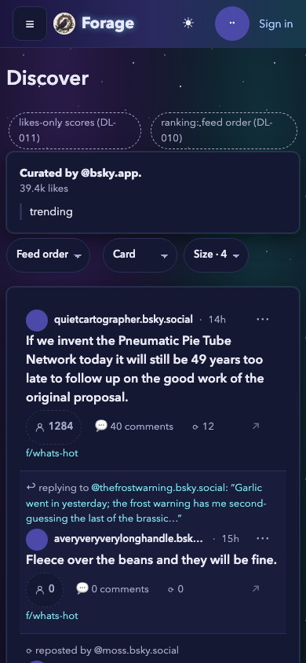
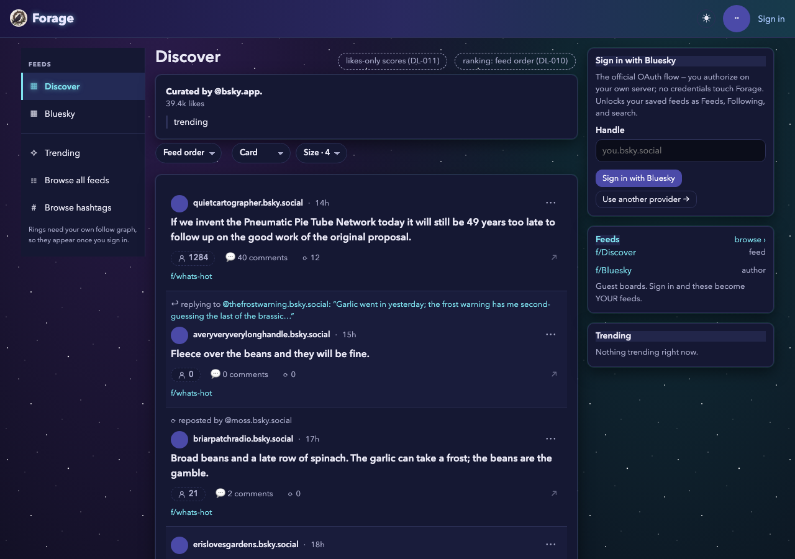
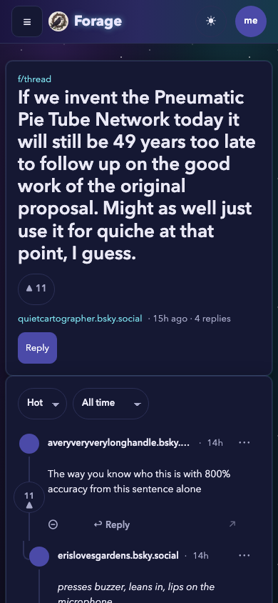
Nebula (observatory) nebula
bg#EEF0F7card#FFFFFFband-fill#1B1540nav-fill#E2E4F0link#4B4AA8link-hover#2F2E7Atext#1F2140muted#5C5F80art slots: page-art gradient + inline SVG · band-art gradient · card-art none · accent-glow 0 0 6px rgba(120, 140, 220, .35)
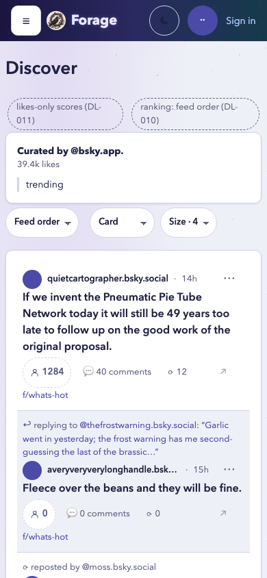
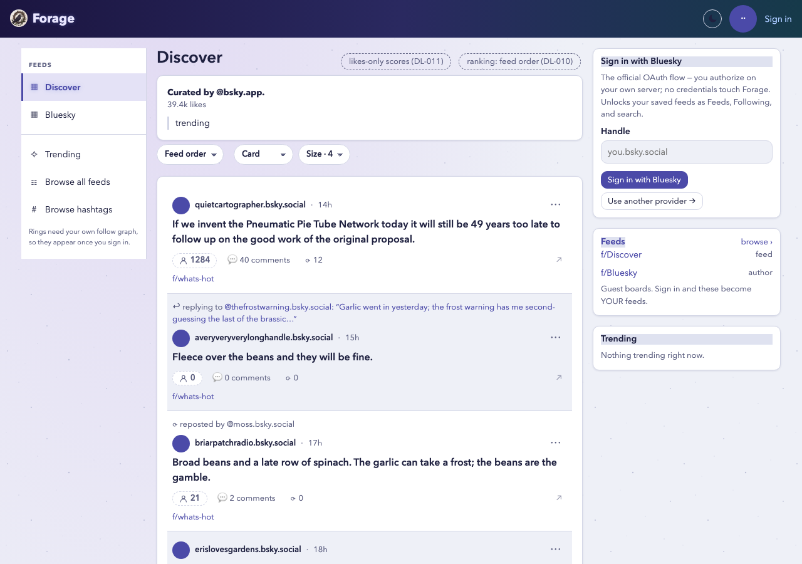
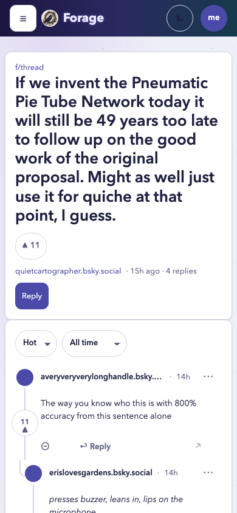
Revisions
| v | Date | What changed |
|---|---|---|
| 2 | 2026-08-30 | Owner review: decisions 1–6 locked as proposed. No code change; frames stand at forage@3bf6bff. |
| 1 | 2026-08-30 | First capture: Surf and Nebula, both sides, board (phone, desktop) + thread (phone), beside Forage light from main. Gradients and inline SVG only; asset slots defined (decision 6). |